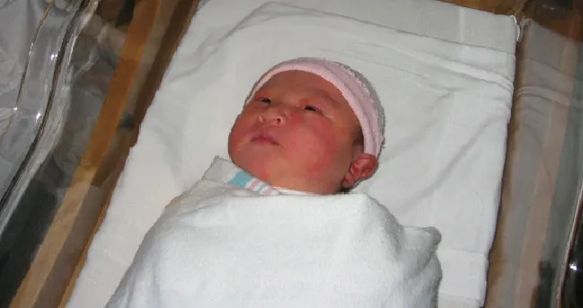

Página 7 · Síntese aplicada
Fechando o Caso 1: conduta e complicações sem decorar
De volta à parturiente da abertura. Ela evoluiu para o período expulsivo: dilatação total, bolsa rota, apresentação em occípito-púbico, De Lee +3 (bem encaixada), feto fletido — e ela, exausta. Todos os critérios de aplicabilidade estão na mesa. Agora a conduta fica óbvia, e é isso que a montagem das três perguntas comprou.
O caso cumpre todos os critérios
Percorra o APLICAR sobre ela: Ausência de colo (dilatação total ✓); Pelve proporcional (sem DCP ✓); Livre (canal desobstruído ✓); Insinuada (De Lee +3 = cabeça bem encaixada/insinuada — critério preenchido ✓); Conhecer a variedade (occípito-púbico, conhecida ✓); Amniotomia (bolsa já rota ✓); Reto e bexiga (esvaziar a bexiga). Sete caixas marcadas.
- dilatação total
- bolsa rota
- occípito-púbico
- De Lee +3
- fletida
- exausta
- APLICAR: todos
Conduta: fórceps Simpson de alívio (indicação materna); vácuo como alternativa válida. Recuperação ativa: quais critérios ele preenche?
A conduta: fórceps de alívio, Simpson
Como a paciente está exausta, a indicação é o fórceps de alívio / profilático — indicação MATERNA, não sofrimento fetal — para abreviar o período expulsivo (é o fechamento da pegadinha da primeira página: o gatilho aqui é a exaustão, não o feto em risco). O modelo escolhido é o Simpson, porque a apresentação já está em occípito-púbico e não precisa de rotação — é só terminar o desprendimento. O vácuo-extrator seria uma alternativa válida (cabeça baixa, só desprendimento, feto fletido).
As complicações sem decorar — as "duas barras de ferro"
O formato clássico de prova pede três complicações maternas e três fetais do fórceps. Não se decora — deduz-se. Pense no fórceps como duas barras de ferro dentro do canal vaginal; o que essas barras podem ferir no trajeto responde as maternas:
- Complicações maternas: laceração de vagina, de colo, de reto e de bexiga.
- Complicações fetais: trauma de face, trauma ocular, céfalo-hematoma e fratura.
Interativo: alterne técnica correta × ruim e toque cada sítio.
O fórceps como duas barras de ferro no trajeto: as maternas ficam no canal (vagina, colo, reto, bexiga); as fetais no polo (face, ocular, céfalo-hematoma, fratura). Alternar técnica correta × técnica ruim modula a intensidade do dano — o mapa transforma o decoreba em dedução anatômica e ancora o caveat: dependem da técnica.| Maternas (no canal) | Fetais (no polo) |
|---|---|
| laceração de vagina | trauma de face |
| laceração de colo | trauma ocular |
| laceração de reto | céfalo-hematoma |
| laceração de bexiga | fratura |
Rodapé-caveat: dependem da técnica — a técnica correta minimiza muito.
O caveat que salva a resposta
Um caveat clínico fecha o raciocínio: as complicações dependem da técnica. A técnica correta minimiza muito qualquer um desses danos — não são inevitáveis. A doutrina do caso é essa: raciocinar, não decorar. Visualizando a pegada e o trajeto das colheres, as complicações se deduzem — e a boa técnica é o que as mantém no papel, longe da paciente.

Área eritematosa na hemiface, sobre a região malar, compatível com a marca de contato da colher — no trajeto do instrumento. É o padrão localizado e benigno/autolimitado: na ausência de assimetria persistente, déficit de sucção ou sinais neurológicos, regride em poucos dias. É a tradução física do caveat: a boa técnica mantém o dano superficial.
"Forceps Marks" por Joanne Lee/Flickr, via OpenStax — CC BY 4.0 · página de origem
Quiz — fixação
Parturiente em expulsivo: dilatação total, bolsa rota, occípito-púbico, De Lee +3, feto fletido, exausta. Conduta e modelo:
- C) Correta. Todos os critérios do APLICAR cumpridos; a exaustão indica fórceps de alívio (indicação materna), e o modelo é o Simpson porque a cabeça já está em OP e não precisa rodar — só desprender; o vácuo é alternativa válida.
- A) Escala para cesárea sem necessidade. A via vaginal operatória resolve e é o degrau proporcional.
- B) Kielland para uma cabeça que não precisa de rotação (OP = direta). Instrumento errado para a variedade.
- D) Contradição em termos. Com De Lee +3 a cabeça está insinuada (não é fórceps alto), e o fórceps alto está proscrito de qualquer modo.
Sobre as complicações do fórceps no formato "3 maternas + 3 fetais":
- B) Correta. As maternas seguem o trajeto das "duas barras de ferro" no canal (vagina, colo, reto, bexiga); as fetais atingem o polo (face, ocular, céfalo-hematoma, fratura).
- A) Inverte materno e fetal. Troca o canal pelo polo.
- C) Nega o caveat. As complicações dependem da técnica e a técnica correta as minimiza — não são fatalidade.
- D) Erra a natureza do céfalo-hematoma. É complicação fetal (e, aliás, mais assinatura do vácuo), nunca materna.
Julgue: "De Lee +3 indica cabeça insinuada e preenche o critério I do APLICAR; e, como as complicações dependem da técnica, a técnica correta minimiza muito o dano."
- V) Correta. De Lee +3 = cabeça bem encaixada/insinuada (a insinuação começa no plano 0; +3 está bem abaixo, no assoalho) → critério I preenchido. E o caveat é cobrável: as complicações dependem da técnica, que bem executada minimiza muito o dano.
- F) Tornaria a frase falsa o que não está nela. Dizer que De Lee +3 é cabeça não insinuada (seria negativo) ou que as complicações são inevitáveis (contraria o caveat) — nada disso consta.
O fio clínico não fecha na alta — o desfecho do parto abre a frente seguinte, onde a mesma lógica de decisão reaparece diante da febre puerperal.